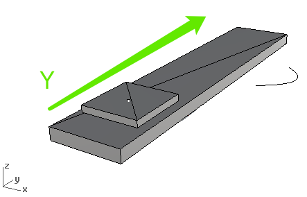
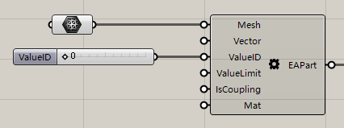
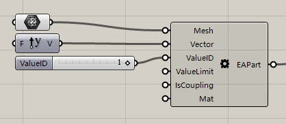
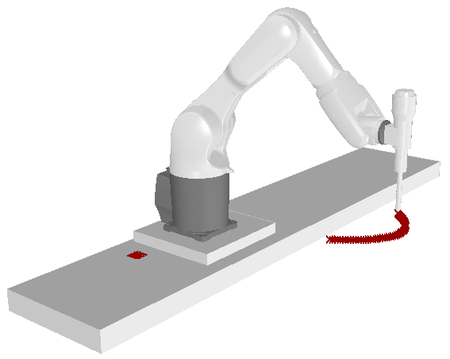

6. Customize EA¶
Note
Document of this tutorial is CustomEA.3dm , CustomEA.gh | Downlaod in Github
When we buy or make a new external axis device,we need to get a same external axis device in FUROBOT.
6.1. Load external axis model¶
In Rhino,load the finished mesh model ( in CustomEA.3dm )
Note
There are one square mesh,one big rectanglar mesh,one point,one curve in the scene:
The rectanglar mesh is stationary,the squrae can move along Y axis of world coordinate.
6.2. External axis parts¶
6.2.1. so,What is external axis parts ?¶
is the moving part which contains:
Mesh model : Model of the element.
Moving direction : Direction vector of the moving part.
Value ID : In offline program ,the value ID is the ID to represent the moving part.
Value limitation interval : Value limit of moving.
Is coupling or note : When the moving parts’s moving value cannot be recognized by robot,this means No coupling.
Material : Material of the element.
For example,the rectanglar mesh:
Has a mesh.
No direction because it is stationary.
Value ID should be set to 0 ,because no value to control it’s moving.
No value limit.
Is coupling or not,which is not important.
Has a Material.
So we can define this part in FUROBOT:
Also, we can define the second part:
Finally,we combine these parts into CustomEA component:
One important thing is: Plane input accept a plane when the all external
value is Zero ,it also can be called Initial plane.In this example,this plane
is in the top center of square mesh.
if everything is OK,viewport shows:
Note
In FUROBOT，the unit of direction vector of External axis part is mm.
It means,if you use unit vector(length=1),the moving length is 1mm,so you should
be care of the lenght of direction vector.